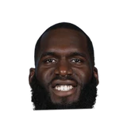
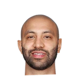

“There was a lot of talk in the offseason about how I’m going to play and how I’m going to handle the whole situation without him. “I believe I’m an experienced player already. I’ve been in the league a few years by now, and I have other point guards. I have Goran Dragic and Kendall Marshall. I have great passers. I’m quite sure I’ll be fine.”

What Marcin Gortat has said about other NBA players and coaches
12 quotes from Marcin Gortat about 15 other people around the NBA, newest first. Each one links to its original source.
Best quotes
Durant, on the other hand, would entertain Gortat's half-joking recruitment attempts whenever the Thunder came to the District.
“I was helping. I was helping (general manager) Tommy (Sheppard), I was helping (former general manager) Ernie (Grunfeld).It was the time everyone was talking about KD, obviously later he signed with Golden State, but hey, everybody was trying to get KD. I was like let me help out,”
Marcin Gortat on playing in LA after losing to the Lakers in the NBA Finals in 2009:
“Obviously in 2009 Kobe Bryant took a championship from me. I hate him because of that. He knows that.”
What NBA players and coaches have said about Marcin Gortat →
Quotes per season
Marcin Gortat talks most about
 Bradley Beal1 quote
Bradley Beal1 quote
Daniel Ochefu1 quote Dennis Rodman1 quote
Dennis Rodman1 quote- Ernie Grunfeld1 quote
 Goran Dragic1 quote
Goran Dragic1 quote- Jermaine O'Neal1 quote
 John Wall1 quote
John Wall1 quote
Kendall Marshall1 quote Kendrick Perkins1 quote
Kendrick Perkins1 quote Kobe Bryant1 quote
Kobe Bryant1 quote LaMarcus Aldridge1 quote
LaMarcus Aldridge1 quote LeBron James1 quote
LeBron James1 quote
2020-21
2 quotesWhile Gortat would get Durant to bite on his pregame and in-game schtick, the Polish hammer said he witnessed a few instances when Westbrook would go up to his own teammates to tell them to stop laughing no matter what the score was.
“I just got to tell you, I love that. That's a Paul Pierce attitude. He's a little feisty too,”
Durant, on the other hand, would entertain Gortat's half-joking recruitment attempts whenever the Thunder came to the District.
“I was helping. I was helping (general manager) Tommy (Sheppard), I was helping (former general manager) Ernie (Grunfeld).It was the time everyone was talking about KD, obviously later he signed with Golden State, but hey, everybody was trying to get KD. I was like let me help out,”
2018-19
1 quoteMarcin Gortat on playing in LA after losing to the Lakers in the NBA Finals in 2009:
“Obviously in 2009 Kobe Bryant took a championship from me. I hate him because of that. He knows that.”
2016-17
2 quotes“I became a better screener by watching guys like Kendrick Perkins, Dennis Rodman,”
Marcin Gortat:
“I’m the only big man standing right now, not counting Mr. Ochefu, our rookie sitting at the bench. I’m the last big man standing here,I have to play, I have to perform, I have to play the highest level.”
2014-15
2 quotesJorge Castillo:Gortat on Aldridge:
“It doesn’t change shit. We got to be ready to play. He’s just 1 player. He’s really good but we’re going to go at him.”
“John [Wall] was truly amazing. I'm glad that he had a game like that. He kind of backed what I posted on Twitter a few days ago,”
2013-14
2 quotesMichael Lee:Marcin Gortat on Roy Hibbert:
“I don’t want this guy to come in & drop 20 & 15 on me. So if he drops 0 & 2, I’m cool with that.”
Michael Lee:Marcin Gortat on Bradley Beal:
“This kid got incredible heart. He’s one of our rising stars. One day he’s going to be an all-star.”
2012-13
2 quotes“There was a lot of talk in the offseason about how I’m going to play and how I’m going to handle the whole situation without him. “I believe I’m an experienced player already. I’ve been in the league a few years by now, and I have other point guards. I have Goran Dragic and Kendall Marshall. I have great passers. I’m quite sure I’ll be fine.”
And on media day, he said something that made observers truly roll their eyes.
“Obviously, the main leader in the locker room is Jermaine O'Neal, who is already in charge of everything,”
2010-11
1 quoteBen Q. Rock:Marcin Gortat on media criticism of LeBron James:
“Honestly, I'm just going to say one word: leave the guy alone!”